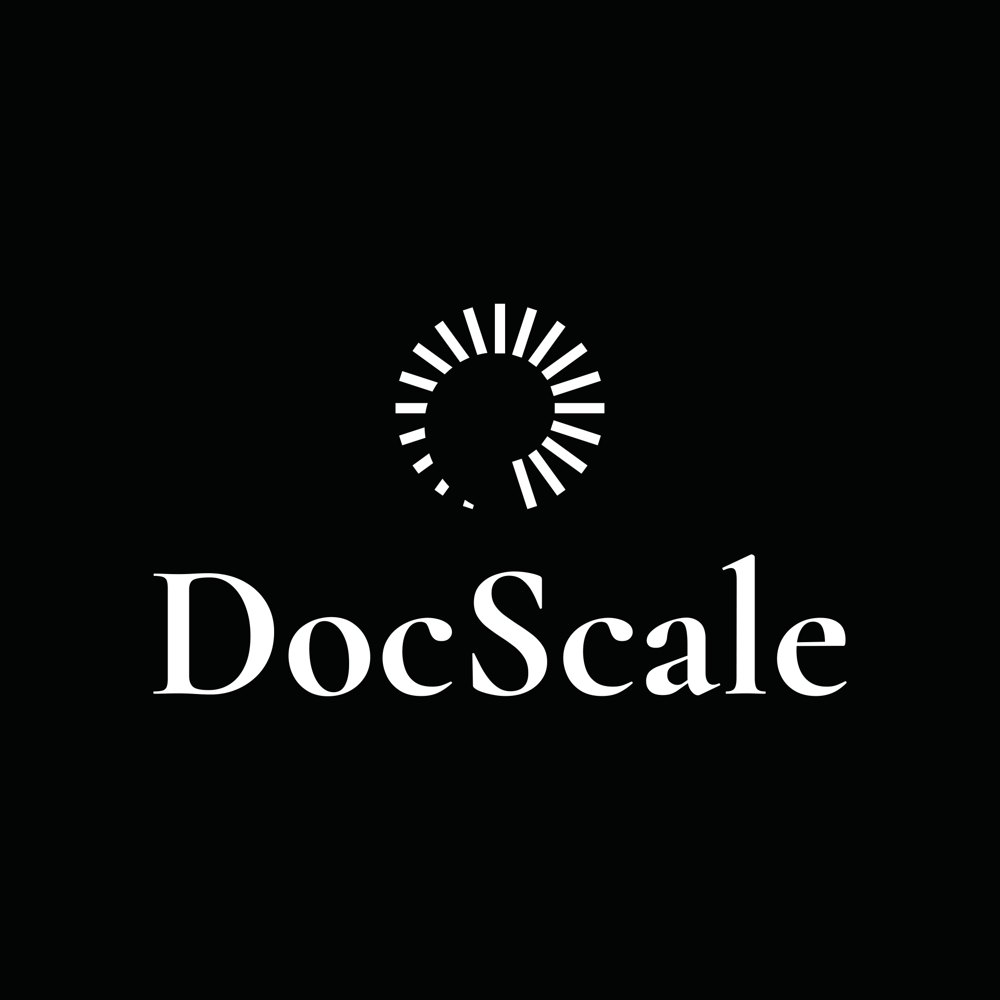

O evento que une gestão empresarial de alto nível com a realidade do médico empreendedor. Aprenda com quem vive a trincheira clínica.
No evento, vamos quebrar essas três armadilhas que travam a sua clínica.
Faturar R$200 mil e não saber quanto sobrou. Se você não toma decisões baseadas em dados e indicadores reais, está gerenciando no escuro.
Acreditar que a solução é atender mais. O problema não é quantidade, é a falta de um modelo comercial estruturado de alto ticket.
Tudo depende de você. Sem SOPs e uma equipe engajada e treinada, sua clínica não é uma empresa, é apenas um emprego de luxo.
O que você vai descobrir neste evento separa os médicos que sobrevivem dos que escalam.
🎟️ Ingressos limitados para manter a qualidade da imersão presencial
A programação completa para transformar a realidade da sua clínica.
Como construir seu faturamento anual com previsibilidade.
Estrutura organizacional e gestão de pessoas e processos para máximo resultado.
Os números que governam clínicas de alta performance.
A matemática do crescimento.
Comunicação nas redes sociais e posicionamento.
Relacionamento e percepção de valor.
Como criar conexões que geram valor e indicações.
Aspectos tributários e jurídicos em consultório e clínicas médicas.
A estrutura financeira de uma clínica lucrativa.
Cirurgiões que vivenciam diariamente os desafios que vão ensinar você a superar.
Cirurgião e Palestrante Internacional
Criador do Método Peduti para Contorno Corporal e Mamas. Com vasta experiência na construção de clínicas de alto padrão, desenvolveu metodologias próprias de gestão e processos que garantem previsibilidade financeira e qualidade no atendimento, sem depender do dono para tudo.
Cirurgião de referência e Especialista em Gestão
Sua visão estratégica transformou a maneira como médicos encaram seus consultórios. Focado em responsabilidade com dados, automação e formação de equipes de alta performance, ensina o passo a passo para otimizar a rotina clínica.
Para médicos com 35+ anos que possuem consultório ou clínica própria e querem melhorar faturamento, aumentar ticket, ter mais tempo de qualidade e escalar.
A imersão será realizada presencialmente nos dias 07 e 08 de Agosto de 2026, na cidade de Vitória — ES.
Você entenderá como aplicar o foco em gestão completa, dominando os 5 pilares fundamentais (comercial, processos, pessoas, financeiro e tributário).
Sim! "Comunidade como Força" é um dos nossos valores. Focamos em networking de alto nível, troca de experiências, união e suporte mútuo.
Dr. Adriano Pedutti e Dr. Luís Eduardo Barbosa, dois cirurgiões de referência nacional com clínicas consolidadas e muita experiência de trincheira.
Garanta o seu ingresso agora mesmo antes que as 60 vagas presenciais acabem.